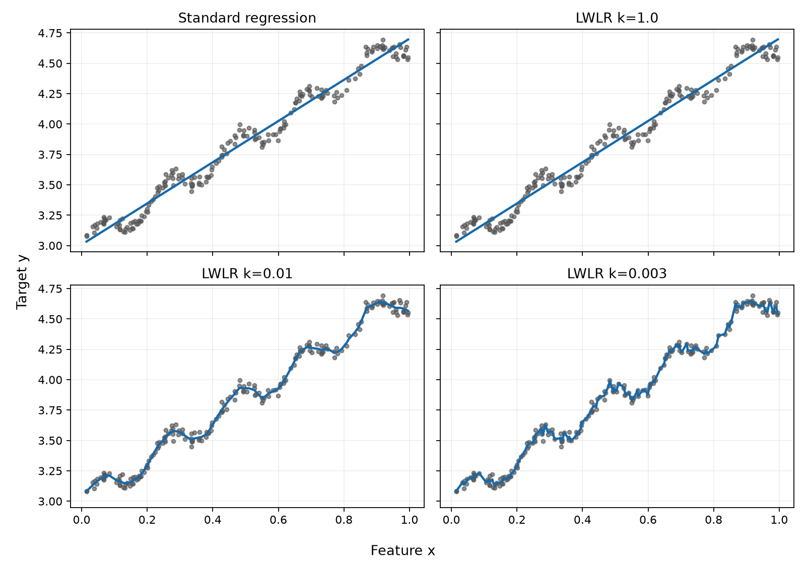

第六周复现了《机器学习实战》第 8 章中能够离线运行的核心代码，包括标准线性回归、局部加权线性回归、岭回归、前向逐步回归和岭回归交叉验证。相比前几周一直处理的分类问题，这一章第一次把目标换成连续数值，也让我开始关注预测值与真实值之间到底差了多少。
这篇复盘会讲清楚
- 回归和分类到底有什么不同
- 标准线性回归怎样找到一条合适的直线
- 局部加权回归中的 k 为什么不能只看训练误差
- 岭回归、逐步回归和交叉验证分别解决什么问题
一、回归要回答的是“具体有多少”
分类的输出通常是有限的类别。例如病马预测会回答“存活”或“死亡”，垃圾邮件过滤会回答“垃圾邮件”或“正常邮件”。回归的输出则是一个连续数值，例如房价、温度、销量或者鲍鱼年龄。
分类
像判断一道题属于单选题中的哪一个选项，结果是预先规定好的类别。
回归
像根据面积、地段和楼层估计房价，需要给出一个可以连续变化的数值。
这也让评价方式发生变化。分类常看错误率，回归则要计算预测值与真实值之间的距离。本章主要使用 RSS（残差平方和）：
RSS = Σ(真实值 − 预测值)²
先求每个样本的误差，再平方并相加。平方可以避免正误差和负误差互相抵消，也会让较大的错误受到更明显的惩罚。
二、标准线性回归：用一条直线概括数据
标准线性回归希望找到一组权重 w，让所有样本的预测误差平方和尽量小：
ŷ = Xw
w = (XᵀX)⁻¹Xᵀy
可以把它想成在一堆散点中放一把直尺。直尺不一定穿过每个点，但要让它与所有点的总体偏差尽可能小。书中的实现先计算 XᵀX，确认行列式不为 0 后再求逆：
def standRegres(xArray, yArray):
xMatrix = np.matrix(xArray)
yMatrix = np.matrix(yArray).T
xTx = xMatrix.T * xMatrix
if np.linalg.det(xTx) == 0.0:
print("This matrix is singular, cannot do inverse")
return None
return xTx.I * (xMatrix.T * yMatrix)作者配套的 ex0.txt 一共有 200 个样本。实际运行得到：
回归权重：[3.00774324, 1.69532264]
训练集 RSS：1.355249
前 5 个预测值：
[3.12257084, 3.73301922, 4.69582855, 4.25946098, 4.67099547]这里的 RSS 适合在同一批数据、同一目标尺度下比较模型，不能脱离数据直接说“1.35 一定很好”。样本数量或者目标值量级变化后，RSS 的大小也会跟着变化。
三、局部加权线性回归：预测时更相信附近样本
标准线性回归只生成一个全局模型。如果数据在不同区域有不同趋势，一条直线可能过于简单。局部加权线性回归在预测每个点时临时建立模型，并让附近样本拥有较大权重，远处样本拥有较小权重。
估计某套房子的价格时，同一小区、面积相近的房子通常比几十公里外的房子更值得参考。
书中使用高斯核计算权重：
w(i,i) = exp(‖x(i) − x‖² ÷ (−2k²))
k 控制“附近”到底有多大。k 大时，较远的样本仍有一定影响，曲线比较平滑；k 小时，模型主要听取非常靠近预测点的样本，曲线会更贴近训练数据。
| k | 训练集 RSS | 曲线特点 |
|---|---|---|
| 1.0 | 1.354961 | 较平滑，接近标准线性回归 |
| 0.01 | 0.148829 | 明显贴近训练点 |
| 0.003 | 0.068660 | 弯折更多，最贴近训练数据 |

四、普通最小二乘为什么会不稳定
标准线性回归需要对 XᵀX 求逆。当两个特征高度相关、特征数很多或者样本不足时，矩阵可能不可逆；即使勉强能够求逆，得到的权重也可能因为数据的一点变化而大幅波动。
例如房屋的“建筑面积”和“使用面积”通常高度相关。模型同时使用这两个特征时，很难稳定区分究竟应该把多少作用分给哪一列。
这不是 Python 独有的问题，而是公式本身对数据条件有要求。书中遇到矩阵不可逆时直接返回，岭回归则通过在矩阵上增加一个限制来改善这个问题。
五、岭回归：不要让某个权重过于激进
岭回归在原来的矩阵中加入 lambda I：
w = (XᵀX + λI)⁻¹Xᵀy
I 是单位矩阵，lambda 决定限制强度。可以把它理解成给模型加了一条规则：每个特征都可以参与预测，但不要轻易把某一个权重放得特别大。
lambda很小时，结果接近普通最小二乘。lambda增大时，权重会逐渐收缩。lambda过大时，所有权重都接近 0，模型可能过于保守。
本次使用 4177 条鲍鱼数据测试了 30 个不同的 lambda。最大值约为 178482300.96，此时八个权重都已经非常接近 0。这个实验说明了权重收缩现象，但不能把“权重绝对值最小”误称为最佳模型。
岭回归负责提供一组从宽松到严格的候选限制；哪一个 lambda 更合适，要由新数据上的误差来判断。
六、前向逐步回归：一次只调整一个方向
前向逐步回归从全部权重为 0 开始。每一轮依次尝试让某个特征的权重增加或减少一个很小的步长，计算 RSS，并保留误差最低的调整。
像在黑暗中下山：每次只朝一个方向迈一小步，比较哪一步下降最多，再决定真正往哪里走。
for iteration in range(numberOfIterations):
lowestError = float("inf")
for featureIndex in range(featureCount):
for direction in (-1, 1):
trialWeights = weights.copy()
trialWeights[featureIndex] += eps * direction
prediction = xMatrix * trialWeights
currentError = rssError(yMatrix.A, prediction.A)
if currentError < lowestError:
lowestError = currentError
bestWeights = trialWeights.copy()
weights = bestWeights.copy()按照作者 Notebook 的参数，在鲍鱼数据上设置 eps=0.01，运行 200 轮后得到：
[0.05, 0.00, 0.09, 0.03, 0.31, -0.64, 0.00, 0.36]有些权重仍然为 0，表示在当前步长和轮数下，它们没有被优先选择。这个算法速度不快，但每次只改一个特征，能够清楚展示权重是怎样一步步进入模型的。
七、交叉验证：不要拿练习题给自己打分
如果使用训练数据选择 lambda，就像做完练习题后仍拿同一套题给自己考试，容易高估效果。交叉验证会多次随机划分训练部分和测试部分：
- 使用训练部分计算 30 个 lambda 对应的岭回归模型。
- 在没有参与本轮训练的测试部分上计算 RSS。
- 重复多次，比较每个 lambda 的平均测试误差。
本次固定随机种子并进行 10 次验证，得到：
平均错误最小的 lambda 下标：0
对应 lambda：0.00004540
最小平均 RSS：2046.026659固定随机种子是为了让每次运行都能复现同一结果，不代表换一组随机划分仍会得到完全一样的数字。更稳妥的做法是继续比较不同划分、不同评价指标，并保留真正独立的测试集。
八、源码复现中遇到的兼容问题
书中的 regularize 函数会让每一列减去均值，再除以该列方差。如果一列的所有值都相同，方差就是 0，直接相除会出现 NaN 和运行警告。
这次没有改变书中正常特征的算法，只对常数列作了兼容处理：
centered = xMatrix.copy()
columnMeans = np.mean(centered, 0)
columnVariance = np.var(centered, 0)
safeVariance = np.asarray(columnVariance, dtype=float).copy()
safeVariance[safeVariance == 0] = 1.0
return (centered - columnMeans) / safeVariance常数列减去自己的均值后本来就是全 0，把除数从 0 改为 1 后结果仍为 0；其他有变化的列继续除以原方差，与书中公式一致。回归测试还会检查没有 RuntimeWarning、结果全部有限，并确认正常列没有被错误清零。
九、本周没有写成“已完成”的内容
作者第 8 章后半部分包含乐高商品网页抓取和旧版 Google Shopping API。相关服务已经失效，无法按照原流程获得数据，因此本周只复现了使用作者配套数据、能够离线验证的回归核心部分。
我没有为了让目录看起来更完整而编造一个新的商品接口，也没有在周报中写成“已经运行成功”。源码复现除了知道完成了什么，也应该把无法验证的边界记录清楚。
十、目前还没有真正弄懂的问题
- 最小二乘公式的推导。现在会使用公式，也知道目标是让 RSS 最小，但还不能从求导开始完整推到闭式解。
- 局部加权回归的高斯权重。能够解释距离越近权重越大，却还需要理解指数形式和 k 的具体影响。
- 岭回归为何更稳定。已经看到权重随 lambda 收缩，但对特征值、矩阵条件数和不可逆问题之间的关系还不熟。
- 参数选择。训练 RSS 较小不代表泛化更好，还需要通过测试误差理解过拟合与欠拟合。
十一、下周计划
- 01手算一个最小二乘例子
从 RSS 写起，补一遍对权重求导并令导数为 0 的过程。
- 02比较训练误差与测试误差
把局部加权回归的 k 放到独立测试数据上比较，而不是只看训练 RSS。
- 03补做上周遗留实验
继续整理 AdaBoost 轮数和 SVM 核参数对结果的影响。
- 04进入第 9 章树回归
学习用树结构处理回归问题，并比较它与本章线性模型的差别。
十二、第六周最值得保留的认识
数值误差局部约束验证
回归预测的是连续数值，RSS 负责描述总体误差；局部加权回归让模型在不同位置使用不同的局部参考，岭回归通过约束降低权重的不稳定，最后还要用交叉验证判断参数能否应对未见数据。
如果只用一句话总结第六周，那就是：模型把训练数据拟合得更紧，并不自动等于预测得更好；真正重要的是它面对新数据时还能不能保持可靠。